A Japan Travel Guide
Make the most of your trip to Japan with my own comprehensive guide for Japans best destinations. My guide has the best attractions listed in Japans most exciting cities.

Why should I visit Japan?
Good question here are the top 20 reaons that Japan should be your next trip.
1. Beautiful natural scenery
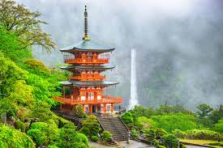The first thing is obviously the natural beauty of the country. Even though many people think of Japan as a highly modern country with flashy neon lights and advanced technology, shopping malls and high-end stores, there are many ways in which Japan is a nature lover’s paradise! Japan’s nature is incredibly diverse. The rugged mountains, rocky coastlines, pristine white beaches, bamboo forests and some of the world’s most beautiful waterfalls are just some of the natural beauty to be enjoyed all year round.
2. Mount Fuji
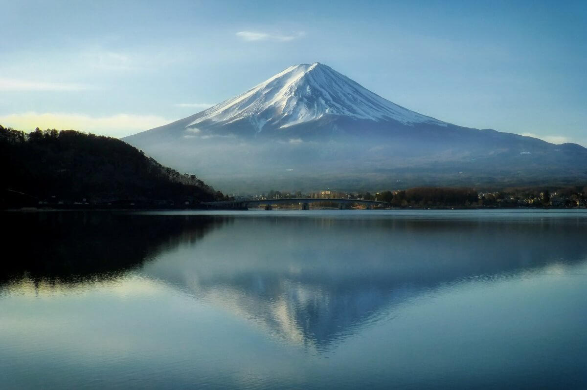Mount Fuji is famous all over the world as a place to visit during any season of the year. But the majestic Fujisan is not ‘just a mountain’ as it takes a very special, sacred place in the Japanese culture.
3. Saftey
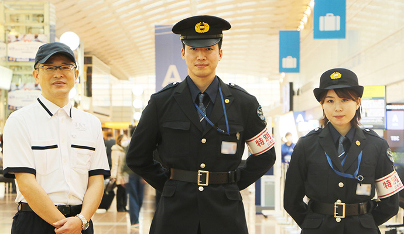
4.Incredible food
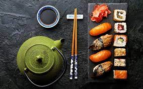Even though Japanese cuisine is available around the world, the country attracts millions of tourists every year just to experience authentic Japanese food. Some of the usual experiences are the sushi conveyor belt and sake bars and don’t forget to try some fresh sushi at Tsukiji Fish Market or the delicious street food like takoyaki in Osaka. Tokyo has more Michelin stars than any other city in the world, with also the most three-star restaurants (12) in the world! Add to it a variety of traditional Japanese drinks and you have an experience of a lifetime waiting for you!
5. Beautiful temples, shrines, and zen gardens
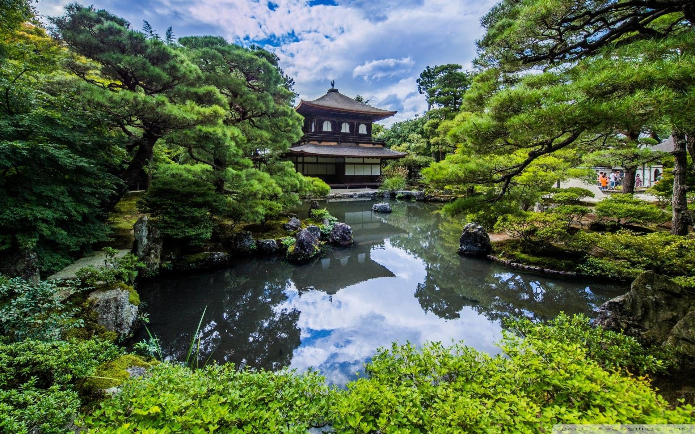There are an estimated 80,000 temples and shrines in Japan of all sizes and some are over 1,000 years old! The Buddhist temples and zen gardens are incredibly beautiful and if you enter them you really can experience how peaceful and magical these places actually are.
6. Friendly people
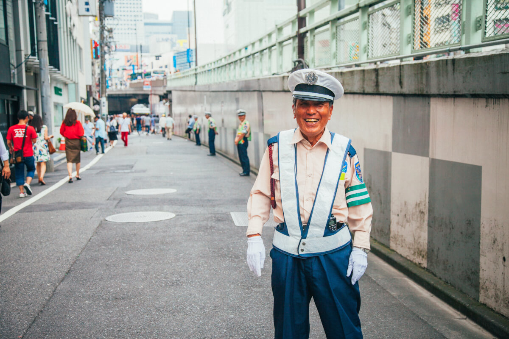When you’re visiting Japan you will quickly find out that Japanese behavior is completely different to how people behave in Western countries. People in japan have the attitude to bother the people in their environment as little as possible. You will notice it as soon as you enter the train because it is amazing how silent it is in the train! Everyone is as respectful as possible and also incredibly helpful. If you have a question or seem to be confused about something you will always find someone who can help you! The language barrier is difficult at times, but Japanese people will always try to help you. It is difficult to describe a feeling like this with words so you should definitely experience on your own.
7. Efficient Public Transportation
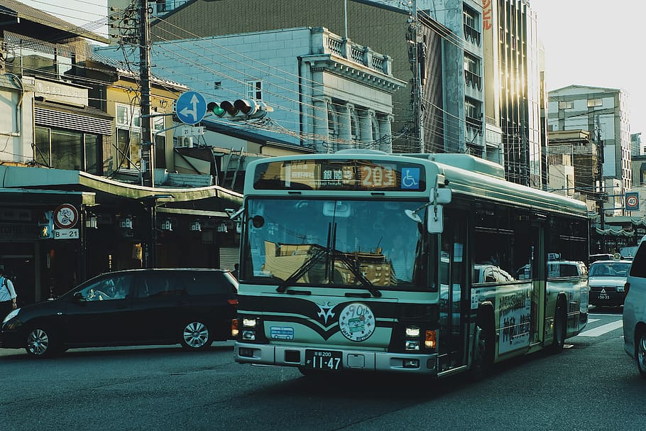The public transportation network in Japan is simply amazing. Especially when you are in the bigger cities, the system is just incredible. With trains or metro’s departing every few minutes (during the day) it is amazing how fast you can commute from one part of the city to another part within a short period of time. The Tokaido Shinkansen line, connecting Tokyo, Osaka and Kyoto, is Japan’s busiest and most popular line with 370 departures each day! As a tourist it is definitely the most convenient, reliable, fastest way of discovering Japan. The best part for international tourists is that they can purchase a Japan Rail Pass that will give them unlimited travel for a designated period of time throughout the country!
8. Thrilling experiences
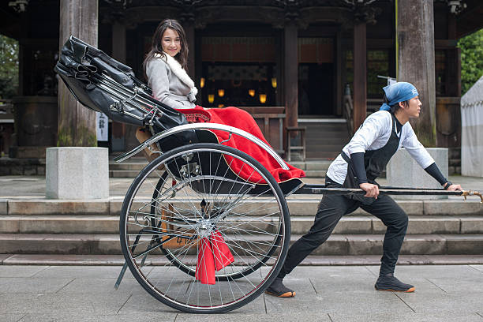Adventure tourism is not something that one would associate with Japan, but the truth is that you can find many exciting experiences in this country. Whether it is snowboarding or skiing in Hokkaido or Nagano, or cycling along the Seto Inland Sea, catching a glimpse of Mount Fuji from the rollercoasters of FujiQ Highlands or sand-boarding in Japan’s desert of Tottori, the options for thrill-seekers are endless. With about 75% of Japan covered in mountainous landscape you can embark on some amazing multi-day hikes or walk the steps of ancient pilgrimage routes like the Kumano Kodo Trail or the Shikoku 88 Temples Pilgrimage and witness the perfect mixture of nature and culture. At many tourist spots like Arashiyama or Asakusa you can also actively explore the area while riding a traditional Japanese rickshaw.
9. Festivals and matsuri
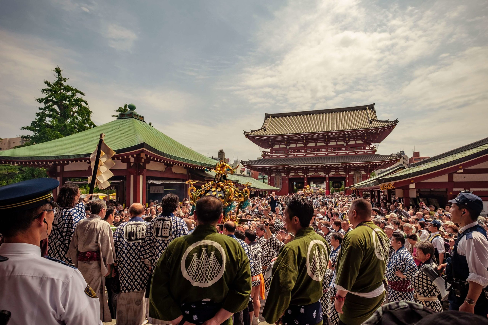At any time of the year, Japan hosts a number of events and matsuri for anyone to enjoy. Matsuri are traditional Japanese events where often floats, called mikoshi, are carried around between temples and shrines. They often take place in the summer and attract thousands or even millions of visitors with their energetic atmosphere, amazing street food activities for everyone to enjoy.
10. Clean country
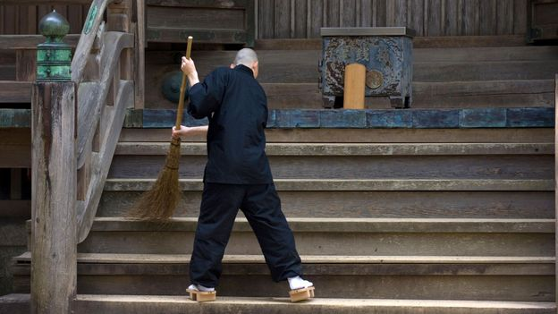Something that you will soon notice after your arrival; Japan is extremely clean! Even in the metropole of Tokyo you will not often see trash laying around, no cigarette butts on the curbs and streets smell nice. The lack of garbage bins available in the cities might make you wonder how is this even possible? The answer is simple, Japanese people respect their surroundings, clean up after themselves and take their trash home. A cultural principle that is highly valued in the Japanese society is mottainai, which can be freely translated as nothing goes to waste. When something is broken, it is not immediately replaced but often repaired and re-used.
11. Shopper’s paradise
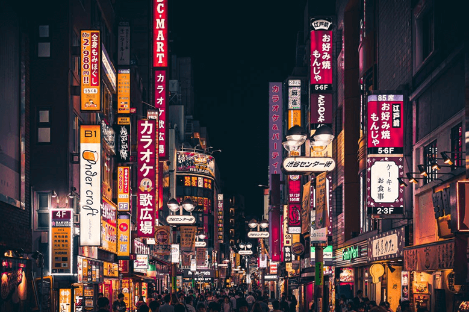Shopping is another reason why you should visit Japan, more so for the local brands than for the international ones. Tokyo and other major cities have world-class shopping centers as well as traditional markets where you can shop for local handicrafts and souvenirs. For gaming and anime lovers, shopping in Tokyo will be an unforgettable experience, Nakano would be the best destination for you.
12. Weird stuff
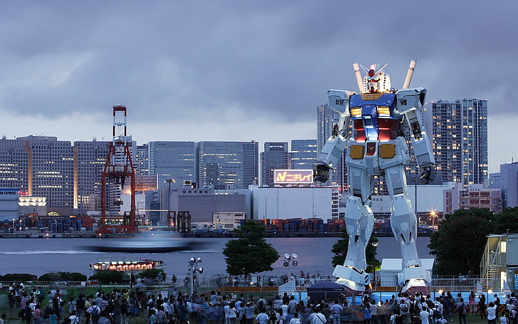Square watermelons, washing toilets that blow-dry and play music, plastic food menus, cartoon versions and mascottes of everything, maid cafe etc, Japan has all kinds of unique things. Otaku refers to pop culture fans who are obsessed with manga or anime. Best places to experience some of Japan’s otaku culture are Akihabara and Nakano in Tokyo.
13. Sakura
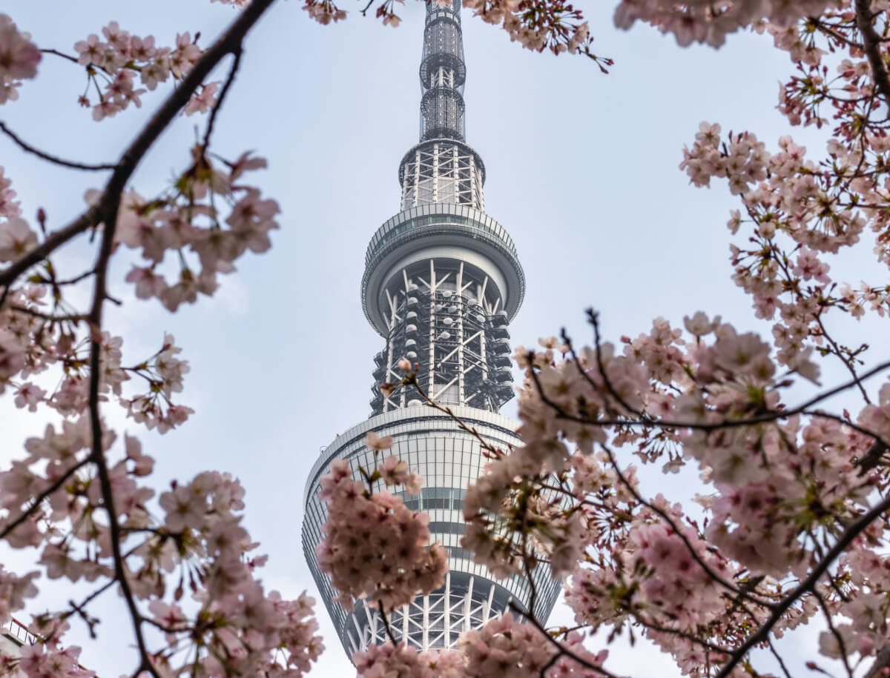No visit to Japan in spring is complete without sakura. For two weeks, everyone and everything in the spirit of the beautiful flowers. During the sakura season you will see limited edition sakura (flavoured) treats and souvenirs everywhere.
14. Ghibli
 One of the biggest contributors to Japan’s famous anime culture are the Ghibli movies.
Have you ever seen My Neighbor Totoro or Spirited Away? They are some of the world’s
most famous anime movies produced by the renowned Studio Ghibli, the animation and art producer
founded by Hayao Miyazaki.
One of the biggest contributors to Japan’s famous anime culture are the Ghibli movies.
Have you ever seen My Neighbor Totoro or Spirited Away? They are some of the world’s
most famous anime movies produced by the renowned Studio Ghibli, the animation and art producer
founded by Hayao Miyazaki.
15. Onsen & sento
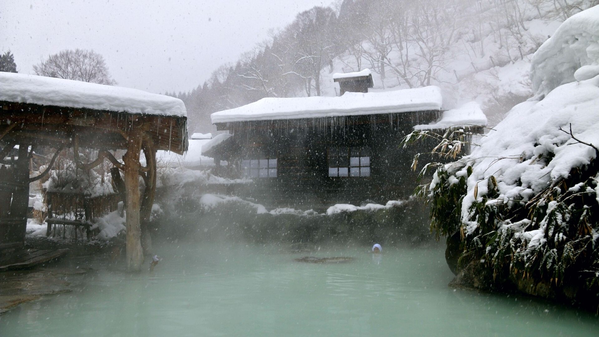When asked about their favourite thing in Japan, many people will (amongst others) answer onsen. Taking an onsen, a hot spring filled with mineral-rich spring water heated by geothermal forces that contains several minerals beneficial to the body, is a must-try activity for tourists as it is completely different from taking a bath in other countries around the world. Sento are communal bath houses where people pay for their entrance. These bath houses were traditionally used by households that did not have their own bath and could be found in big cities and small villages. Today, the number of sento is decreasing as the number of houses with bathing facilities is increasing.
16. UNESCO World Heritage Sites
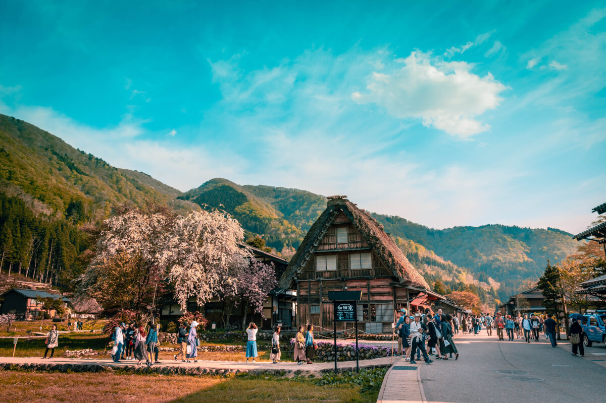By now you should know Japan is home to some of the world’s most picturesque places, a rich culture and a long history. Indeed, Japan is home to no less than 23 UNESCO World Heritage Sites; 19 Cultural Heritage Sites and 4 Natural Heritage Sites. Ranging from historically important shrines like Itsukushima Shinto Shrine on Miyajima to unique natural ecological treasures like Mount Fuji or Shiretoko National Park.
17. Japanese castles
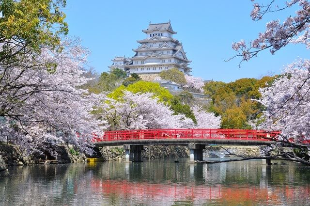In the history of Japan, a large number of castles were built, many of which were destroyed during the many battles or natural disasters like earthquakes. But there are some beautiful castles in Japan that still exist and can be visited, some of which are also designated UNESCO sites.
18. Sumo & sport events
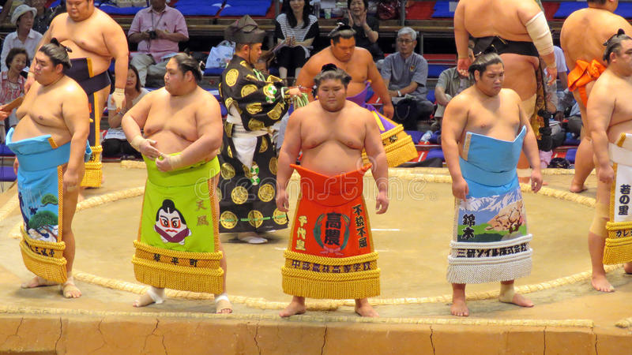Another type of unique cultural event are the Grand Sumo Tournaments that take place at each odd-numbered month and last for two weeks. Watching a sumo game is definitely an experience you should have at least once in your life! Also baseball is Japan’s most popular sport, first introduced in 1872 by an American college professor.
19.Traditional craft and art
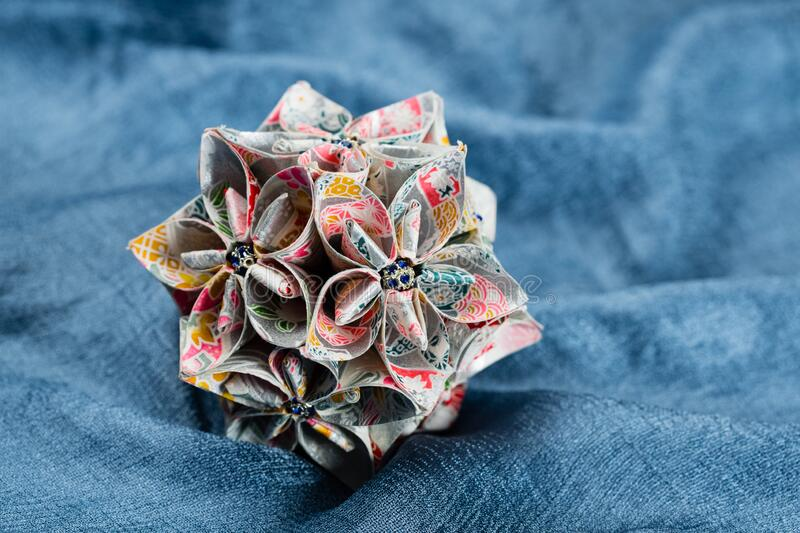Craft in Japan has a long history and has played an important role in the Japanese culture. From the more famous ones such as knives, pottery, kimono, yukata, and tatami, to lesser-known ones such as kokeshi dolls, fireworks, kendama, origami, daruma dolls, Woodblock Prints, Nambu Ironware, and rounded and folding fans, there is a large list of traditional japanese crafts. There are many places that offer craft and art experiences like pottery workshops and tea ceremonies.
20. Unique accommodation
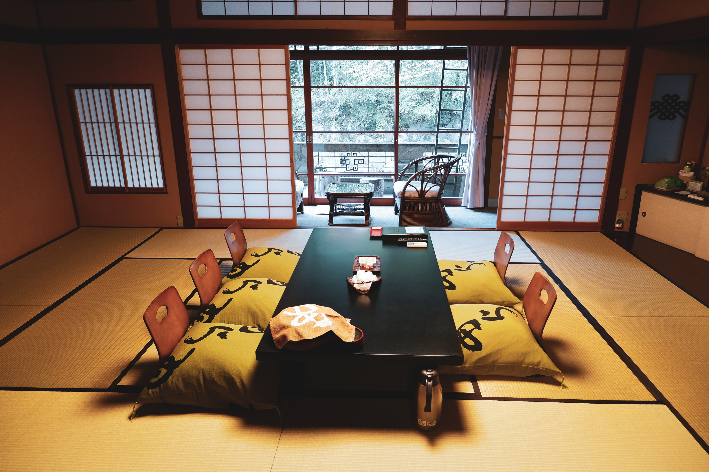Japan is home to a large number of Western-style hotels, but something that you should not miss out on is staying at the traditional Japanese ryokan. A ryokan is a type of Japanese inn that has been around since the 8th century. If you are interested in experiencing the simple and traditional lifestyle of Buddhist monks, temple lodging known as shukubo is an excellent option. Shukubo literally means “sleeping with the monks” and besides a great night’s rest and delicious shojin-ryori, the Buddhist vegan cuisine, you can join the monks for morning prayers. Originating in Osaka, capsule hotels have made their advance in Japan. These hotels, usually found in the larger cities, originally targeted individuals looking for a cheaper alternative for single nights stay.
Copyright © Travel dude (Japan). All Rights Reserved. Home Osaka Tokyo Kyoto About me Contact me